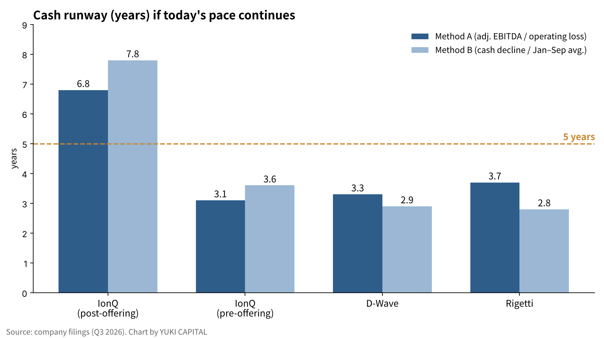
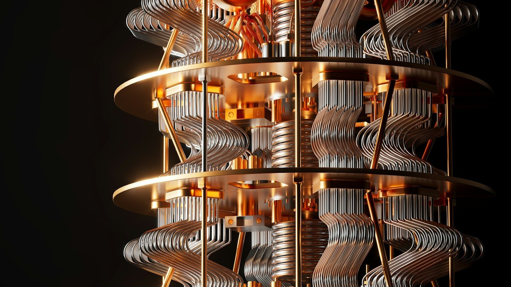
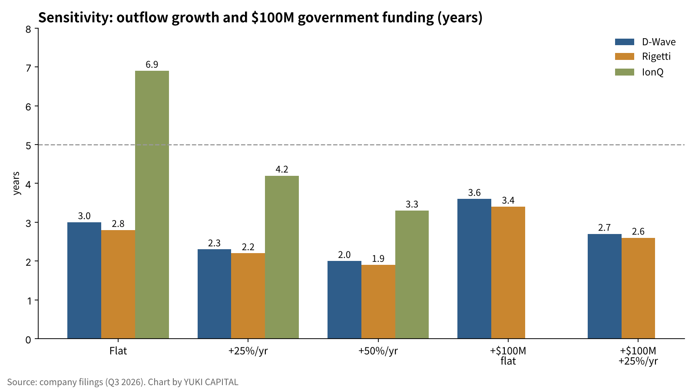

How Many Years Can Three Quantum Computing Companies Run on Their Cash at Today's Loss Rate? Estimates from IonQ, D-Wave and Rigetti's Q3 2026
Three listed quantum computing companies reported July–September results in early November. IonQ's revenue more than quadrupled from a year earlier, while D-Wave and Rigetti still book only a few million dollars a quarter [1][2][5].
None of the three yet generates cash from operations. When looking at a loss-making company, the first thing worth checking is not when it turns profitable, but how many years it can run on the cash it holds.
This article asks: if today's pace of losses continues, how many years will each company's cash last?
- At today's pace, D-Wave and Rigetti hold roughly 2.8–3.7 years of cash, short of five years.
- IonQ holds about $3.65 billion including its roughly $2 billion October offering, or 6.8–7.8 years. On its pre-offering balance alone, it had 3.1–3.6 years.
- If losses grow 25% a year, D-Wave and Rigetti shrink to 2.2–2.3 years. Up to $100 million from the US Commerce Department adds only about 0.6 years per company.

Question and background
A quantum computer calculates with qubits, units of information that can hold a superposition of 0 and 1. The three companies use different approaches. IonQ uses trapped ions held by electric fields, and Rigetti uses superconducting circuits. D-Wave focuses on quantum annealing for optimization problems while also developing superconducting gate-model machines.
In this article, "runway" means cash, deposits and marketable securities divided by the annual cash outflow. It is a rough measure of how long a company can keep operating without raising new money.
The question matters now because demand for quantum technology has started to come with deadlines. On October 27, the US National Institute of Standards and Technology (NIST) issued the final version of its transition plan, under which encryption that quantum computers could break, such as RSA and elliptic-curve cryptography, is deprecated after 2030 and disallowed after 2035 [6]. In a 2025 paper, Google researcher Craig Gidney estimated that RSA-2048 could be factored in under a week with fewer than one million noisy qubits [7]. Both the defenders' preparations and the attackers' technology now carry dates.
But if a company runs out of cash before that demand matures, shareholders may not share in the reward. Issuing new shares to raise money dilutes each existing share. That is why it is worth setting the company's cash deadline next to the demand deadline.
Data and method
The figures come from each company's filings with the US Securities and Exchange Commission (SEC) and its earnings releases [1][2][3][4][5]. Cash on hand is cash plus short- and long-term investments. Rigetti has no debt, and this calculation does not subtract debt for D-Wave or IonQ.
Outflow is measured two ways. Method A annualizes the quarterly adjusted EBITDA loss by multiplying it by four. Adjusted EBITDA is operating profit or loss before interest, taxes, depreciation, stock-based compensation and similar items. Method B multiplies the quarterly decline in cash on hand by four. Method B includes capital spending but also mixes in items such as customer prepayments.
IonQ completed an offering in October and closed its acquisition of the contract chipmaker SkyWater during the quarter, so its balance changes cannot be used. Instead, Method B annualizes its $350.6 million January–September adjusted EBITDA loss [1]. Rigetti does not report adjusted EBITDA, so its operating loss is used for Method A. Because operating loss includes non-cash stock compensation, it tends to overstate the outflow.
The formula is: runway (years) = cash on hand ÷ annual outflow.
| Company | Cash (Sep 30) | Quarterly outflow | Annualized outflow | Runway |
|---|---|---|---|---|
| IonQ (post-offering) | ~$3.65B | A $133.6M / B Jan–Sep avg. | $534M / $468M | 6.8 / 7.8 yrs |
| IonQ (pre-offering) | $1.66B | Same | $534M / $468M | 3.1 / 3.6 yrs |
| D-Wave | $503.4M | A $37.7M / B $42.8M | $151M / $171M | 3.3 / 2.9 yrs |
| Rigetti | $497.1M | A $33.2M (operating loss) / B $44.2M | $133M / $177M | 3.7 / 2.8 yrs |
Results
At today's pace, D-Wave's cash covers 2.9–3.3 years and Rigetti's 2.8–3.7 years. D-Wave's cash fell from $546.2 million at the end of June to $503.4 million at the end of September, a $42.8 million drop in three months [2][3]. Rigetti's fell from $541.3 million to $497.1 million, down $44.2 million [4][5]. Both are burning cash at roughly $40 million-plus a quarter.
IonQ's September balance alone was $1.66 billion, or 3.1 years under Method A. Adding the roughly $2 billion offering closed on October 16 brings it to about $3.65 billion, extending runway to 6.8–7.8 years [1]. IonQ's Q3 revenue was $173.8 million, of which $83.5 million came from the acquired SkyWater foundry business [1].


Side by side, the three show that while cash balances look similar, runway is set by how fast cash goes out. D-Wave and Rigetti each hold about $500 million, but the gap between methods is large. Capital spending and working-capital swings move the quarterly cash decline.
Sensitivity analysis
The assumption that today's pace continues was varied in three ways: losses flat, growing 25% a year, and growing 50% a year. A case with up to $100 million from the Commerce Department was layered on top. For D-Wave and Rigetti, the more conservative Method B is used.
| Company | Flat | +25%/yr | +50%/yr | +$100M (flat) | +$100M (+25%/yr) |
|---|---|---|---|---|---|
| IonQ (post-offering) | 6.9 yrs | 4.2 yrs | 3.3 yrs | — | — |
| IonQ (pre-offering) | 3.2 yrs | 2.4 yrs | 2.1 yrs | — | — |
| D-Wave | 3.0 yrs | 2.3 yrs | 2.0 yrs | 3.6 yrs | 2.7 yrs |
| Rigetti | 2.8 yrs | 2.2 yrs | 1.9 yrs | 3.4 yrs | 2.6 yrs |

If outflow grows just 25% a year, D-Wave's and Rigetti's runways shrink to the low two-year range. The Commerce funding is an up-to-$100 million R&D award that Rigetti formally signed in September, and D-Wave signed an agreement of the same size [2][8]. In both cases the government receives a minority equity stake, and adding $100 million to cash extends runway by only about 0.6 years.
Discussion
There are two opposing views. The first is that rising revenue will reduce outflow. D-Wave expects system shipments to land in October–December, with most of its annual revenue in that quarter [3]. Rigetti expects to recognize $8.4 million from a 108-qubit system for India's C-DAC in the same quarter [4]. Both amounts are small against quarterly outflows of $40 million-plus, and not enough to extend runway by years.
The second is that while share prices are high, the companies can raise money whenever they need to. IonQ's $2 billion offering is a live example. From this view, runway should be read not as a company's lifespan, but as the period shareholders can avoid dilution. That is also the most accurate way to read the figures here.
There are limits. The data cover one quarter, and Method A excludes capital spending. Rigetti's operating loss includes non-cash costs, and Method B mixes in prepayments. IonQ now includes a separate foundry business, so the outflow of its quantum business alone cannot be isolated.
Three checkpoints can test these estimates. At the end of October–December, does D-Wave's cash fall below $460 million, or Rigetti's below $450 million? Does IonQ's quarterly adjusted EBITDA loss exceed $150 million? And when, and how much, does the Commerce money actually arrive?
Conclusion
If today's loss rate continues, D-Wave and Rigetti have roughly three years of cash, short of five. IonQ has about seven years including its offering, but was in the three-year range before it. If outflow grows 25% a year, the two shrink to the low two-year range, and $100 million from the government extends that by only about 0.6 years. Without new offerings or revenue growth, the three companies' cash does not reach around 2030, the year that now anchors quantum demand.
How I see it
I live in Japan and hold 2,500 shares of IonQ and 1,500 shares each of D-Wave and Rigetti. All three lose money, and I know many people worry about more offerings. On cash, I have thought five years would be enough. In this calculation, D-Wave and Rigetti came out at about three years at today's pace. The two-year gap to five will be filled by revenue growth, government money, or new offerings.
Even so, I see the need for quantum rising faster than I expected. Government orders are increasing, and cyber problems continued this October and November. I think quantum comes after AI. Looking at the July–September results, I didn't feel anything in particular.
Sources
- IonQ, Inc., 「Form 8-K Exhibit 99.1: Third Quarter 2026 Financial Results」, 2026-11-05 https://www.sec.gov/Archives/edgar/data/0001824920/000119312526449779/ionq-ex99_1.htm
- D-Wave Quantum Inc., 「Form 8-K Exhibit 99.1: Third Quarter 2026 Results」, 2026-11-11 https://www.sec.gov/Archives/edgar/data/0001907982/000190798226000180/qbts-20261110xexx991.htm
- D-Wave Quantum Inc., 「Form 8-K Exhibit 99.1: Second Quarter 2026 Results」, 2026-08-06 https://www.sec.gov/Archives/edgar/data/0001907982/000190798226000127/qbts-20260806xexx991.htm
- Rigetti Computing, Inc., 「Rigetti Computing Reports Second Quarter 2026 Financial Results」, 2026-08-06 https://finviz.com/news/379037/rigetti-computing-reports-second-quarter-2026-financial-results
- Rigetti Computing, Inc., 「Third Quarter 2026 Financial Results（Investor Relations）」, 2026-11-11 https://investors.rigetti.com/
- National Institute of Standards and Technology, 「NIST IR 8547: Transition to Post-Quantum Cryptography Standards（Final）」, 2026-10-27 https://csrc.nist.gov/pubs/ir/8547/final
- Craig Gidney, 「How to factor 2048 bit RSA integers with less than a million noisy qubits（arXiv:2505.15917）」, 2025-05 https://arxiv.org/abs/2505.15917
- Nasdaq（Zacks）, 「Rigetti Secures $100 Million CHIPS Award to Advance Quantum Scaling」, 2026-09 https://www.nasdaq.com/articles/rigetti-secures-100-million-chips-award-advance-quantum-scaling
- Quantum Computing Report, 「IonQ Announces Record Q3 2026 Revenues of $173.8M」, 2026-11-07 https://quantumcomputingreport.com/ionq-announces-record-q3-2026-revenues-of-173-8m-and-raises-fy-2026-guidance-to-over-505m-as-backlog-reaches-1-2b/amp/
Photos: Laura Ockel / Planet Volumes (Unsplash). Charts by YUKI CAPITAL
I record my daily numbers and decisions on X.